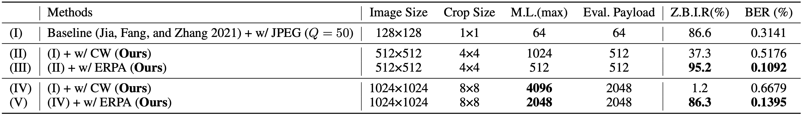

Deep learning-based watermarking has emerged as a promising solution for robust image authentication and protection. However, existing models are limited by low embedding capacity and vulnerability to bit-level errors, making them unsuitable for cryptographic applications such as digital signatures, which require over 2048 bits of error-free data. In this paper, we propose README (Robust Error-Aware Digital Signature via Deep WaterMarking ModEl), a novel framework that enables robust, verifiable, and error-tolerant digital signatures within images. Our method combines a simple yet effective cropping-based capacity scaling mechanism with ERPA (ERror PAinting Module), a lightweight error correction module designed to localize and correct bit errors using Distinct Circular Subsum Sequences (DCSS). Without requiring any fine-tuning of existing pretrained watermarking models, README significantly boosts the zero-bit-error image rate (Z.B.I.R) from 1.2% to 86.3% when embedding 2048-bit digital signatures into a single image, even under real-world distortions. Moreover, our use of perceptual hash-based signature verification ensures public verifiability and robustness against tampering. The proposed framework unlocks a new class of high-assurance applications for deep watermarking, bridging the gap between signal-level watermarking and cryptographic security.
To enable error-aware watermarking suitable for cryptographic use cases, we propose ERPA, a novel mechanism designed to improve the bit-level reliability of watermark decoding under distortion. ERPA enhances bit-level watermark reliability through a deterministic encoder and a noise-robust neural decoder. The encoder spatially distributes error vectors using a Distinct Circular Subsum Sequence (DCSS), allowing the decoder to recover the original error pattern even under distortion.
README, our proposed framework, unifies a croppingbased embedding strategy with the ERror PAinting Module. While recent deep learning-based watermarking techniques have significantly advanced in imperceptibility and robustness, they remain insufficient for cryptographic applications due to limited payload capacity and vulnerability to minor image distortions that can lead to critical bit-level errors during extraction. These limitations hinder their use in high-assurance scenarios such as digital signature verification, which require both high capacity and near-zero bit error rates. As shown in the Figure, our framework addresses these challenges via modular components for capacity scaling, error correction, and perceptual hash-based signature verification.
We report PSNR, SSIM, BER, and Zero BER Image Rate (Z.B.I.R) to assess both visual fidelity and reliable message recovery. M.L. is the maximum embeddable message length, while Eval. Payload is the actual payload used in evaluation, adjusted to account for ERPA's redundancy. Paired settings use equal Eval. Payload for fair comparison. With ERPA, the system achieves 100% Z.B.I.R under near-ideal conditions, ensuring robust signature verification without sacrificing visual quality. This demonstrates that our method meets the dual demands of perceptual fidelity and cryptographic reliability, making it suitable for our framework.
In the 8 × 8 grid setting required by our framework, Z.B.I.R is reduced to just 1.2%. However, ERPA significantly improves robustness. In our README framework, BER dropped from 0.6679 to 0.1395, while Z.B.I.R rose dramatically from 1.2% to 86.3%. These improvements demonstrate that ERPA enables cryptographic-level reliability even under distortion, validating its effectiveness as a lightweight, model-agnostic enhancement. These results confirm that the proposed framework enables reliable digital signature embedding while preserving the model's robustness, even under image distortions.
Visual comparison between original and watermarked images shows that our crop-based method preserves structural details and introduces no perceptible artifacts.
@misc{choi2025readme,
title={README: Robust Error-Aware Digital Signature via Deep Watermarking Model},
author={Hyunwook Choi and Sangyun Won and Daeyeon Hwang and Junhyeok Choi},
year={2025}
}